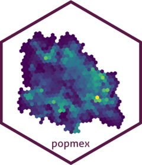

Extract the population of a locality in 400 m H3 hexagons
Source:R/extract_pop.R
extract_pop.RdSelects the hexagons of the Kontur/HDX population density dataset (`hdx_pop2021`, `hdx_pop2022` or `hdx_pop2023`) that intersect one or several urban localities of a state. The locality boundaries come from the INEGI 2019 localities of the [rgeomex](https://fdzul.github.io/rgeomex/) package.
Arguments
- year
year of the population dataset: 2021, 2022 or 2023.
- cve_edo
two-digit state code of INEGI, as text (e.g. `"14"` for Jalisco, `"31"` for Yucatán).
- locality
name or names of the target localities. The names do not need to be exact: the most similar name of the state is used (e.g. `"Merida"` finds `"Mérida"`).
Value
an `sf` object (EPSG:4326) with the hexagons that intersect the localities and their population (`population`).
Author
Felipe Antonio Dzul Manzanilla felipe.dzul.m@gmail.com.
Examples
# \donttest{
if (requireNamespace("rgeomex", quietly = TRUE)) {
merida <- extract_pop(year = 2023, cve_edo = "31", locality = "Merida")
sum(merida$population)
}
#> [1] 878428
# }